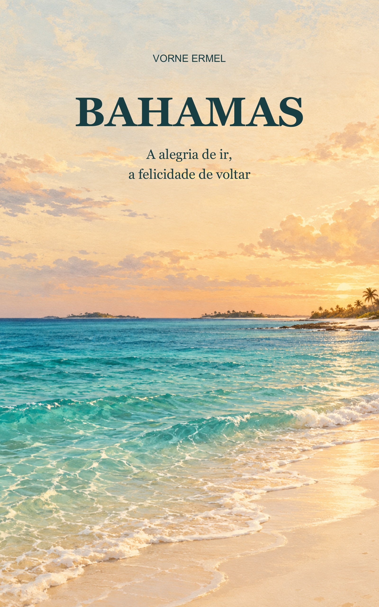

A alegria de ir, a felicidade de voltar
Vorne Ermel
Narrado por Israel M R
Do outro lado do corredor do avião, um casal chamou minha atenção. Não demorou para nos apresentarmos: ele era seu João; ela, Cleide. Com eles estava Marcelo, o filho de dez anos. Cleide era psicóloga, e seu João, cirurgião cardíaco. Também estavam a caminho de umas férias nas Bahamas, dispostos a aproveitar aquelas praias tão bonitas.
Foi uma conversa simples, dessas que começam entre pessoas que vão dividir algumas horas de viagem. Pouco antes, éramos desconhecidos. Agora eu já sabia seus nomes e um pouco do que os levava até ali. Era bom perceber que a minha vontade de descansar encontrava companhia.
À minha direita estava outro casal, de idade avançada. Pelo que pude notar, ele já devia ter passado dos oitenta anos, e ela parecia ter idade próxima à dele. Eram seu Jorge e dona Ana. Conversavam comigo com muita gentileza e um sorriso que parecia não se desfazer.
Enquanto falávamos, eles permaneciam de mãos dadas. De vez em quando, trocavam um carinho. Aquilo me chamou a atenção mais do que qualquer outra coisa. Havia uma tranquilidade na maneira como estavam juntos, uma atenção que não precisava de muitas palavras.
Pensei em quantas viagens teriam feito lado a lado. Eu não conhecia a história dos dois, e não poderia adivinhá-la apenas olhando para eles. Mas aquele gesto eu podia ver: em meio ao movimento de um avião cheio, continuavam encontrando tempo para se acariciar.
Soube que viajavam todos os anos para aquelas praias. O trabalho ao longo do ano era estressante, e as férias eram uma oportunidade de descanso. Só algum tempo depois descobri que eram donos de uma rede de hotéis em várias capitais do Mercosul.
Naquele primeiro momento, porém, eram apenas seu Jorge e dona Ana, sorridentes, sentados perto de mim. Gostei de conhecê-los assim. Antes de saber o que possuíam ou o que faziam, eu já havia percebido o carinho que tinham um pelo outro.
Esses encontros fizeram o começo da viagem ficar mais agradável. Eu estava indo conhecer praias, mas já havia alguma coisa para observar ali mesmo, antes de chegarmos ao destino. Cada passageiro trazia sua própria vida, suas preocupações, seus planos. Por algumas horas, nossos caminhos seguiam na mesma direção.
Meus pensamentos foram interrompidos pelo alto-falante. O comandante deu as boas-vindas aos passageiros, desejou uma boa viagem e falou das férias nas Bahamas. Depois, chamou nossa atenção para as orientações da comissária de bordo.
Acompanhei as explicações sobre os procedimentos de segurança. Em seguida, o comandante informou que teríamos aproximadamente seis horas de voo. O tempo estava ensolarado, com boa visibilidade: céu de brigadeiro.
Fiquei tranquilo. Sabia que poderia haver alguma turbulência durante o trajeto, mas aquela notícia sobre o tempo me deixou mais à vontade. A expectativa de chegar também ajudava. Eu tinha quinze dias pela frente e queria aproveitá-los.
O avião decolou. Pouco depois, atingimos a altitude de cruzeiro. Quando foi permitido sair da poltrona, olhei para a frente da cabine. Quase todos continuavam sentados, com exceção de alguns passageiros que se movimentavam mais adiante.
Levantei para dar alguns passos pelo corredor e esticar o corpo. Ficar muito tempo sentado incomoda, e aquele pequeno movimento já trouxe alívio. Enquanto caminhava, observei os rostos ao redor. Em muitos deles havia uma felicidade parecida com a que eu sentia.
Talvez cada um estivesse imaginando uma coisa diferente: a praia, o hotel, o descanso, os dias longe do trabalho. Eu não sabia. Via apenas as pessoas ali, acomodadas em suas poltronas, e reconhecia em mim aquela disposição para deixar a rotina um pouco de lado.
Voltei ao meu lugar e me acomodei. O tempo passou depressa. Depressa demais, pelo menos para a minha percepção, porque só me dei conta de que a viagem terminara quando o alto-falante voltou a anunciar uma mensagem aos passageiros.
O avião já estava em terra. Agradeciam pela viagem e nos desejavam uma ótima estada. Devo ter cochilado, talvez dormido por um bom tempo, pois não percebi as últimas horas passarem nem acompanhei o pouso como esperava.
Assim que a porta foi aberta, os passageiros começaram a se levantar e a retirar seus pertences dos compartimentos acima das poltronas. Fiz o mesmo. Logo estava a caminho da saída do avião, agradecendo em pensamento pela viagem.
Eu havia chegado. As praias que, até então, ocupavam meus planos agora estavam ali, ao alcance dos próximos dias.
Depois dos procedimentos de desembarque, peguei minha mala e segui para a saída do aeroporto de Nassau, capital das Bahamas. Precisava de um táxi que me levasse ao hotel onde ficaria hospedado pelos próximos quinze dias.
O percurso era de aproximadamente seis quilômetros, segundo a informação que eu tinha. Durante o caminho, quase não desviei os olhos da janela. Queria ver as casas, as ruas, o movimento. Havia construções antigas e outras modernas ao longo da via, e eu me entretinha observando como tudo aparecia junto, compondo a cidade.
Vi também tendas com objetos à venda, principalmente peças de artesanato. Mesmo de passagem, chamavam minha atenção os detalhes do trabalho. Fiquei com vontade de olhar tudo com mais calma. Naquele instante, entretanto, ainda estava a caminho do hotel, e a cidade ia se apresentando aos poucos, pela janela do carro.
Há uma curiosidade especial nesses primeiros minutos de chegada. O que para quem mora ali talvez seja apenas o caminho de todos os dias, para mim era novidade. Uma fachada, uma esquina, uma pequena loja: tudo merecia um olhar mais demorado.
Não demorou para chegarmos. Fiz os procedimentos da hospedagem e escolhi um apartamento voltado para o sol da manhã. Depois de entrar no quarto, meu plano era simples: tomar um banho rápido, trocar de roupa e sair.
Queria conhecer as praias, andar pela cidade, ver pessoas. Afinal, estava de férias. Haveria tempo para ficar no hotel, mas, naquele começo, a vontade de sair era maior.
Comecei a caminhar sem um rumo certo. Entrava numa rua, dobrava na próxima, seguia por outra e virava mais uma esquina. Não importava muito a ordem. Eu queria conhecer o lugar, andar entre as pessoas que circulavam por ali e descobrir o que havia adiante.
Gostava daquela liberdade de não precisar cumprir um compromisso a cada hora. Podia parar, olhar uma vitrine, seguir caminhando. Se uma rua despertava minha curiosidade, eu entrava. Se outra parecia mais convidativa, mudava de direção.
Na rotina, tantas vezes fazemos um trajeto pensando apenas na chegada. Naqueles passeios, o próprio caminho ocupava minha atenção. Eu estava ali para isso: olhar, conhecer, aproveitar. Não precisava transformar cada saída numa tarefa.
Também queria perceber a cidade para além do quarto onde dormiria. O hotel me oferecia conforto, mas era caminhando que eu começava a reconhecer os lugares. Uma viagem ficava mais próxima de mim quando eu podia percorrer suas ruas com meus próprios passos.
Numa das noites, acabei ficando fora até a madrugada. Experimentei vários drinques e, quando percebi a hora, resolvi voltar. Já não me sentia em condições de continuar circulando sozinho. Era melhor retornar, tomar um banho e dormir.
Ainda tinha muitos dias para conhecer aquelas praias. Não precisava aproveitar tudo de uma vez. Foi o que pensei ao encerrar a noite. O entusiasmo era grande, mas eu também precisava descansar para aproveitar o dia seguinte.
Antes de dormir, deixei o despertador preparado. Quando acordei, levantei, fiz minha higiene pessoal e liguei para pedir o café da manhã no quarto. Meu plano de hospedagem cobria os quinze dias com tudo incluído, e eu queria aproveitar aquele conforto.
Pedi algumas frutas e um suco de laranja. Estava com a garganta seca depois dos drinques da noite anterior. Enquanto esperava o café, pensei que precisava me controlar um pouco mais nas próximas saídas. Queria aproveitar as férias inteiras, inclusive as manhãs.
Receber o café no quarto era uma daquelas pequenas comodidades que eu apreciava. Não havia nada de complicado no pedido: frutas, suco, um pouco de sossego. Ainda assim, poder começar o dia daquela maneira fazia parte do prazer da viagem.
À tarde, saí para caminhar, aproveitar o sol e observar o movimento nas praias. Havia muita gente querendo desfrutar o mesmo lugar. Eu olhava ao redor e me divertia com as diferenças: cada pessoa parecia ter seu próprio jeito de passar as férias.
Alguns turistas estavam vermelhos como um pimentão. Ao vê-los, pensei na pressa de quem tenta aproveitar todo o sol de uma só vez. A pele avermelhada dava a impressão de que o entusiasmo havia passado da conta.
Fiquei imaginando o desconforto de vestir uma camisa, de encostar a pele em alguma coisa ou de se deitar à noite. Eu queria voltar com boas lembranças, caminhar no dia seguinte, continuar conhecendo os lugares. Não fazia sentido me exceder a ponto de perder essa disposição.
Aquela cena me fez pensar no meu próprio ritmo. Na noite anterior, eu havia experimentado vários drinques; agora via gente exagerando no sol. Era fácil chegar cheio de vontade e esquecer que as férias durariam muitos dias.
Eu podia aproveitar uma tarde e deixar outra para depois. Podia voltar a um lugar de que tivesse gostado. Havia tempo para caminhar, descansar, sair novamente. Aos poucos, fui encontrando uma maneira de desfrutar tudo sem tanta pressa.
Os dias seguintes passaram entre passeios, praias e paradas para comer alguma coisa. Visitei muitos dos lugares que estavam ao meu alcance. Conheci cantinhos da praia e entrei nas lanchonetes que despertavam minha vontade de ficar.
Foi então que comecei a reparar nas escolhas que fazemos quase sem perceber. Por que entrar numa lanchonete e passar direto por outra, se, à primeira vista, elas parecem oferecer coisas tão parecidas? O que nos faz olhar para um lugar e decidir que é ali?
Pensei nisso mais de uma vez. Talvez algum detalhe me lembrasse um ambiente em que eu já havia me sentido bem. A disposição das mesas, a aparência do balcão, o jeito do lugar. Nem sempre eu saberia explicar. Só percebia que tinha vontade de entrar.
Na minha cabeça, era como uma fotografia conhecida: alguma coisa parecia familiar, mesmo numa cidade onde eu acabara de chegar. Depois, se prestasse atenção, talvez encontrasse ali semelhanças com outros lugares de que gostava.
Era uma impressão minha, uma tentativa de entender por que escolhia este ou aquele ambiente. Não precisava chegar a uma resposta definitiva. Bastava reconhecer como era curioso estar tão longe de casa e ainda assim procurar, em alguns detalhes, uma sensação conhecida.
Eu gostava de descobrir novidades, mas também apreciava encontrar um lugar em que pudesse ficar à vontade. Depois de tantas ruas e paisagens diferentes, escolher onde sentar por alguns minutos era outra forma de fazer parte daquela viagem.
E assim os dias iam passando. Às vezes, parecia que eu havia acabado de chegar; em outras, já reconhecia caminhos que no começo eram inteiramente novos. As férias ganhavam suas pequenas referências, e eu começava a guardar lembranças que não cabiam apenas numa vista bonita da praia.
No hotel, conheci algumas pessoas muito agradáveis. Entre elas havia um grupo de argentinos, com casais e solteiros. Éramos cerca de quinze pessoas, e aos poucos comecei a fazer amizade com aquele pessoal.
Foi muito bom ter encontrado o grupo. Alguns visitavam aquelas praias com frequência e conheciam lugares que eu dificilmente descobriria por conta própria. Comecei a acompanhá-los nos passeios e, com eles, cheguei a recantos menos frequentados.
Até então, eu vinha conhecendo o lugar do meu jeito: caminhando, escolhendo uma rua, seguindo o que me chamava a atenção. Gostava dessa liberdade. Com os novos amigos, tive a oportunidade de fazer outros caminhos e aproveitar o conhecimento de quem já estivera ali.
Percebi como uma companhia podia mudar o alcance de um passeio. Eu continuava no mesmo destino, mas passava a conhecer partes dele que ainda não havia visto. Bastava seguir com pessoas que sabiam um pouco mais para que surgissem outras possibilidades.
Em alguns momentos, saímos dos pontos mais movimentados e visitamos cantinhos escondidos, pouco frequentados. A companhia tornou aqueles passeios ainda mais agradáveis. Tenho certeza de que muitos daqueles lugares teriam ficado fora das minhas lembranças se eu estivesse sozinho.
Alugamos um carro para chegar aos recantos mais distantes da praia. Era uma maneira de ampliar nossos passeios e conhecer um pouco mais do que havia por ali. Ao final da tarde, voltamos para o hotel.
Eu estava contente. A viagem havia começado com conversas no avião e, agora, continuava com outras pessoas, outros encontros. Não tinha planejado aquelas amizades antes de sair de casa, mas elas já faziam parte das minhas férias.
Pensei no quanto dependemos de estar disponíveis para conversar. No avião, bastou uma apresentação. No hotel, a convivência foi aproximando o grupo. As amizades não surgiram de um grande acontecimento; começaram no contato entre pessoas que estavam passando alguns dias no mesmo lugar.
Mais tarde, saímos para aproveitar a noite. Um dos jovens da turma conhecia bem a região e nos levou a uma balada à beira-mar. Ventava, e estava um pouco frio, mas isso não atrapalhou a nossa festa.
Conversamos com várias pessoas. Também houve paqueras e aquela animação de quem saiu para se divertir. Eu aproveitava a companhia, o lugar, a noite que tínhamos pela frente. Estava de férias e me sentia bem ali.
No fim, cada um seguiu sozinho para o seu descanso. A noite havia sido boa do jeito que foi. Nem toda conversa precisava continuar depois, nem toda aproximação precisava se transformar em alguma coisa. Eu já tinha vivido momentos agradáveis e conhecido gente interessante.
Nos dias que se seguiram, continuei visitando lugares bonitos e aproveitando o que aquelas férias ofereciam. Quando pensava nos passeios, lembrava também das pessoas com quem havia estado. O grupo de argentinos, seu João e Cleide, Marcelo, seu Jorge e dona Ana: cada encontro ocupava um lugar diferente na lembrança.
As praias eram lindas, mas não era só da paisagem que eu me recordaria. Havia as conversas, os sorrisos, a gentileza e os caminhos que alguém me ajudara a conhecer. Tudo isso acompanharia as imagens que eu levava comigo.
As duas semanas haviam passado, e meus quinze dias de viagem chegavam ao fim. Eu tinha aproveitado as praias, os passeios, as noites e as comodidades do hotel. Sentia-me muito feliz por tudo o que vivera ali.
Comprei presentes para mim, para minha família e para meus amigos. Escolher alguma coisa para levar era também pensar nas pessoas que faziam parte da minha vida. Mesmo longe, elas estavam presentes na vontade de chegar e repartir um pouco da alegria daqueles dias.
Eu queria levar lembranças do lugar, mas sabia que nem tudo poderia ir dentro da mala. Algumas coisas ficariam comigo de outra maneira: uma conversa, o carinho entre seu Jorge e dona Ana, a curiosidade dos primeiros passeios, os lugares que conheci com os novos amigos.
Quando a gente chega, quinze dias parecem bastante tempo. Há uma sensação boa de ter todas aquelas manhãs pela frente, de ainda não conhecer os caminhos, de poder escolher o que fazer. Depois, quase sem perceber, começamos a contar os dias que faltam para ir embora.
Eu não me arrependia de nada daquela viagem. Tinha conhecido lugares lindos e vivido momentos que guardaria com carinho. Ao pensar em tudo o que fizera, sentia gratidão pela oportunidade de ter estado ali.
Mesmo assim, estava feliz por voltar para minha cidade.
Era curioso sentir tanta alegria pelas férias e, ao mesmo tempo, desejar o retorno. Eu havia aproveitado aqueles dias de verdade. Gostara de estar longe, de caminhar por ruas diferentes, de conhecer pessoas. Agora, queria reencontrar meu lugar.
Talvez algumas coisas de casa ganhassem outra importância depois de tantos dias fora. Os caminhos conhecidos, a presença da família e dos amigos, a vida que eu havia deixado esperando. Nada disso precisava ser novidade para fazer falta.
Nas Bahamas, eu procurara praias e descanso. Encontrei também pequenas ocasiões para observar as pessoas e pensar na minha própria maneira de aproveitar o tempo. Houve momentos de animação e momentos tranquilos, passeios em companhia e caminhadas em que bastava minha curiosidade.
Eu lembraria dessas férias com alegria. Lembraria do mar, das ruas de Nassau, das tendas de artesanato, da liberdade de virar uma esquina sem ter um compromisso marcado. Lembraria das pessoas que dividiram um pedaço daqueles dias comigo.
Gostaria que, ao acompanhar este relato, você também pudesse imaginar um pouco dessas cenas: o corredor do avião, a janela do táxi, o movimento das praias e as saídas com os amigos. São essas lembranças que trago da viagem.
Estava imensamente feliz pelos dias que passei nas Bahamas. E, depois de tudo o que havia visto e aproveitado, havia uma felicidade ainda maior me esperando: voltar para casa, para o meu lugar.
Fim.
Quinze dias nas Bahamas. Praias, passeios sem pressa e pessoas que tornam a viagem mais especial.
Israel M R embarca disposto a descansar e conhecer novos lugares. Desde as conversas no avião até as amizades feitas no hotel, encontra pequenas histórias que acompanham cada paisagem: o carinho de um casal mais velho, a curiosidade de caminhar por Nassau e a alegria de descobrir recantos que sozinho talvez não encontrasse.
Com uma voz próxima de quem conversa, Vorne Ermel convida o leitor a acompanhar essas férias e a reconhecer, entre tantas novidades, o afeto pelo próprio lugar.
Israel M R passa quinze dias de férias nas Bahamas. Conhece outros passageiros durante o voo, hospeda-se em Nassau, passeia pela cidade e pelas praias e faz amizade com um grupo de argentinos. Entre os encontros e as descobertas, reflete sobre o carinho, a companhia e a maneira de aproveitar o tempo. Ao final, sente gratidão pela viagem e uma alegria ainda maior ao pensar em voltar para casa.
A caminho das Bahamas, Israel M R conhece uma família e um casal de idosos cujo carinho chama sua atenção. A chegada a Nassau abre quinze dias de caminhadas, praias e momentos de descanso. Ele observa a cidade, aproveita o conforto do hotel e começa a descobrir o próprio ritmo de férias.
As amizades feitas com um grupo de argentinos ampliam seus passeios. Com eles, conhece recantos menos frequentados e aproveita uma noite à beira-mar. As paisagens se misturam às lembranças das pessoas que encontra pelo caminho.
No encerramento da viagem, entre os presentes para familiares e amigos e as recordações que leva consigo, Israel percebe que a felicidade de viajar convive com o desejo de voltar. A narrativa termina com sua gratidão pelos dias nas Bahamas e pelo reencontro com seu lugar.